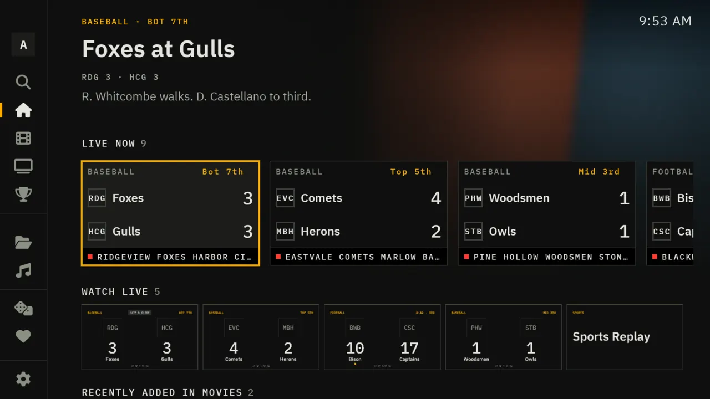
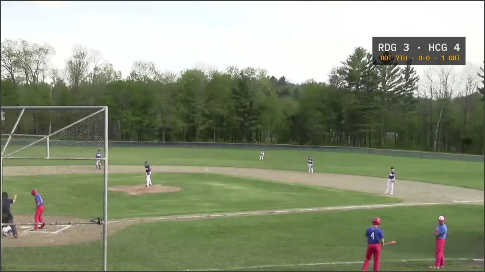
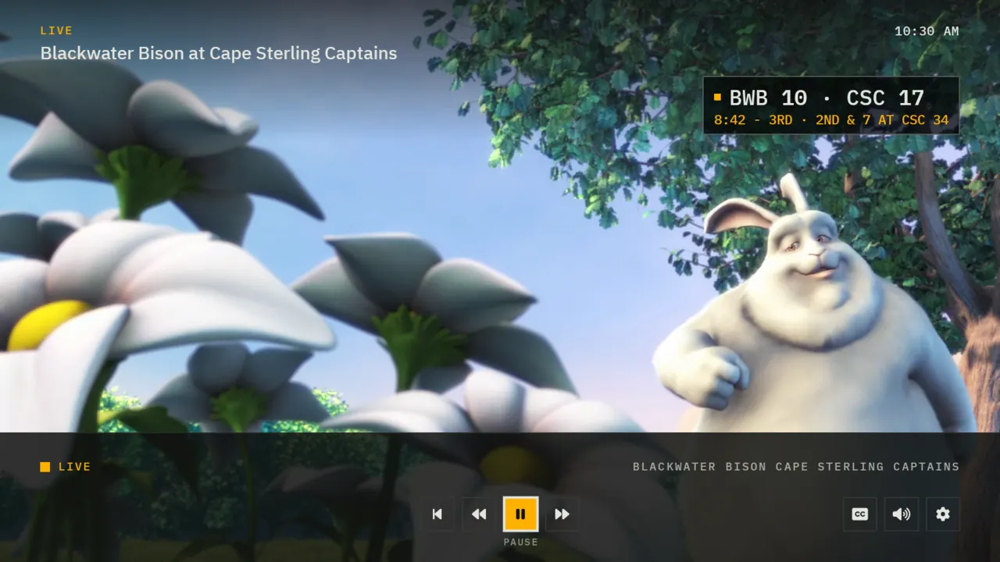
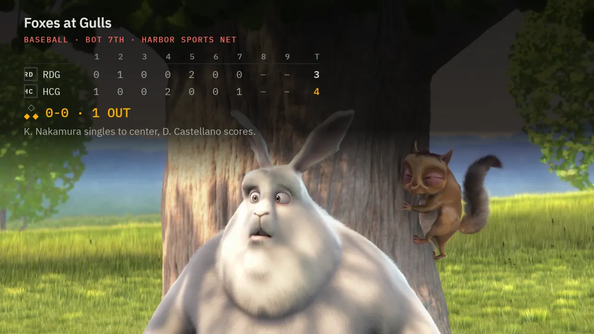
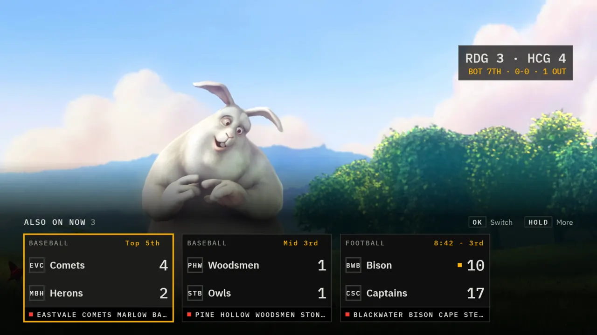
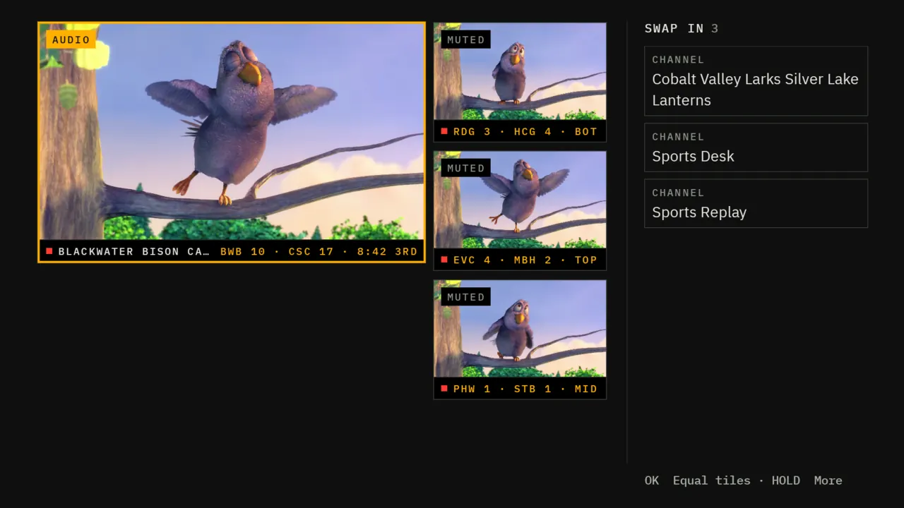

Live sports
Your channels, called like a broadcast.
With the Tally plugin on your Jellyfin server, Tally knows what's being played today, which of your channels carries each game, and what's happening in it right now. Everything below works on Android TV, Fire TV, phones, Samsung and LG TVs, and most of it in Jellyfin in the browser.
Sources and rights
Tally provides no channels and no streams. The video comes from live TV you already have the rights to watch: a paid IPTV service's M3U playlist and XMLTV guide, an HDHomeRun or other antenna tuner, or your own HLS streams. Tally adds the scores, the matching and the way it looks. The teams on this page are made up.
The games board
Every game your channels carry, hottest first.
Today's games show up on the home screen and get a section of their own: live and upcoming, as big cards you can read from the sofa, with a panel for the game in focus: the score, the clock or inning, the situation and the last play.
- Sorted by heat. Late, close games rise to the top. Tags say why: LATE DRAMA, RED ZONE, BASES LOADED, CLUTCH TIME, OVERTIME.
- Matched to your channels by the channel's name, by what its guide says is on, or by the network. A network match is marked NET, since a network can be showing another region's game.
- Watch from any card. Tally opens the channel the game is on. No stream yet? It says NO STREAM YET, or LOOKING FOR A STREAM while the server checks your sources, and plays as soon as one turns up.
- Your teams first. Follow a team and its games move to the front.
- Hide scores when you're catching up on a game later, and Only games with a stream to see just what you can watch.

The score bug
A score bug that knows the situation.
Over every live game sits a small mono score bug: the teams and the score on top, and underneath, in amber, the part that matters right now. Count and outs. Down, distance and where the ball is. The clock and the period. A square marks who has the ball.
It fades in and out on its own, so it's there when you look for it and gone when you don't. With Hide scores on, the scores stay hidden.


Box score · press Up
The whole game, one press away.
Press Up while you watch and the box score comes down over the picture: inning by inning or quarter by quarter, the situation with the runners on base, and the last play in plain words. Press Back and it's gone.

Game switcher · press Down
Everything else that's on, without leaving.
Press Down while you watch and a row of every other live game slides up, each with its score and clock. Press OK to switch, or hold for more. Channel up and down step through your live channels.
Keep a game small in the corner while you watch something else full screen, and let switch alerts tell you when another game gets interesting.

Multiview
Four games. The sound follows you.
Put up to four games on screen at once. The tile you've selected has the sound, marked AUDIO; the rest say MUTED, each with its own live score under it. Swap any tile for another channel from the list beside them.
- Fill multiview with the hottest games in one press.
- On LG TVs, which play one video at a time, multiview plays the tile you're on and shows live cards for the others.

Tally Pulse · new in 2.3
One channel that follows the pulse of every game.
Tally Pulse is a channel your server builds. It watches every live game and cuts full screen to the hottest one. While it plays, a lower third says which game it's on and why.
It's lighter than multiview: your TV plays one stream, and your server does the cutting, without transcoding. It reads the games' own streams, so it adds no load on your sources, and while nobody watches it, it checks nothing.
- First in the live row of the games board, and channel 1 in Jellyfin's Live TV for every other Jellyfin app.
- A slate when it's quiet. With no game live, it shows a "No games live" card.
- Its reasons: red zone, score, two-minute drill, overtime, close game, top game. Admins can see its recent cuts, and why, on the plugin's Ladder page.
A game gets into the red zone, a team scores, or a game goes to overtime.
Otherwise it stays on a game at least a minute, so it never flickers between two.
The TV plays a single continuous stream. The cut happens on the server.
Commentary language · new in 2.3
English or Español, and it stays that way.
Tally keeps English and Spanish commentary apart. Each language gets its own channel, so a game never switches to the other language halfway through.
- English by default. Choose Español under Settings → Commentary language, in every Tally app.
- Watch in Español, or Watch in English, in a game's menu when it has both, a Commentary switch in the player, and an ES mark on the card when the Spanish feed is the one on offer.
- For server owners: Spanish channels are named after their game with "(Español)" and sit after the English ones. A setting hides them from Jellyfin's Live TV while the Tally apps still list them. Streams in other languages are left out.
A game's menu, and the Commentary switch in the player
The stream ladder
When a stream stumbles, the picture doesn't.
When your sources have more than one stream of the same game, the plugin makes them one channel and keeps them all. It plays the best one: the highest frame rate and resolution your server can download fast enough, arriving steadily and live.
If that stream starts to stall, the next part of the game comes from the next stream in line, and the picture keeps going without a reload. After a few steady minutes it steps back up to the better stream, if that one has recovered.
- Bursty streams, handled. A stream that arrives in stop-and-go bursts gives way to a steadier copy of the game. With no steadier copy, Tally starts a little further behind live, so the pauses never reach your screen.
- Seamless switches. The next segments continue the old stream's timeline, so players and Jellyfin see one unbroken channel.
- Visible to admins. The Ladder page shows every stream, its probes, how steadily it arrives, and each switch.
An illustration of the plugin's rules. Each bar is a segment of video: amber on air, gray ready, red late.
Recording games
A DVR that knows when the game ends.
Press and hold a game and choose Record, or record every game of a team you follow. The server records in the background from the channel the game is on, following the stream ladder through any switch.
- Stops when the game is over, not when the listing ends, plus a few minutes after. Postponed and canceled games cancel themselves.
- Watch from the start while the game is still going, and catch up.
- Never spoils it. A recorded game's title, art and details never show the score.
- Checks for room first, from the stream's real bitrate and the length of a typical game, and keeps a reserve free on the drive.
- Into your library. Finished games become MP4 files in a Sports Recordings library, with art drawn from the game. Keep the last few games per team, or delete after a number of days.
Hold OK on any game
College football · new in 2.3
Ranks, and a warning when one's about to fall.
College football is on the board by default. On the Sports page in Jellyfin's web app, games show each team's AP Top 25 rank, and an UPSET ALERT when a ranked team is losing late. College streams get their own College Football group.
Team matching knows that "Texas" and "Texas Tech" are different schools, and handles nicknames that several schools share. Follow a college team and its games follow you across sports.
Also
The small things that make game night.
Other apps
Live cards for every Jellyfin app
Each channel gets a picture of its game, with the live score, redrawn every couple of minutes, and a real guide entry. Channels are numbered hottest first, so even apps that aren't Tally get a scoreboard.
From the phone
Play on TV
In Jellyfin on your phone, tap the screen icon and pick a TV. Every Watch then plays there. Follow the hottest game flips the TV for you.
Idle
A scores screensaver
When the TV is on and nobody's watching, today's games, updating quietly.
Supported leagues
The leagues follow your sources.
The board starts with three leagues. When your channels are named after games of another league the feed covers, Tally adds that league by itself, and lets it go after three days without such a channel. Settings → Live scores lists every league on the board and why it's there.
On by default
- NFL
- College football
- MLB
Added when your sources carry them
- NBA
- WNBA
- NHL
- Men's college basketball
- MLS
- Major European soccer
Added by an admin
Any other league the scoreboard feed covers, by its short name or path. A league an admin removes isn't added back. Or switch live scores off, and the server makes no requests of its own for them.
League names are used only to say which schedules Tally reads. Tally isn't affiliated with or endorsed by any league, team, network or data provider, and this site shows none of their marks.